Primer on Machine Learning
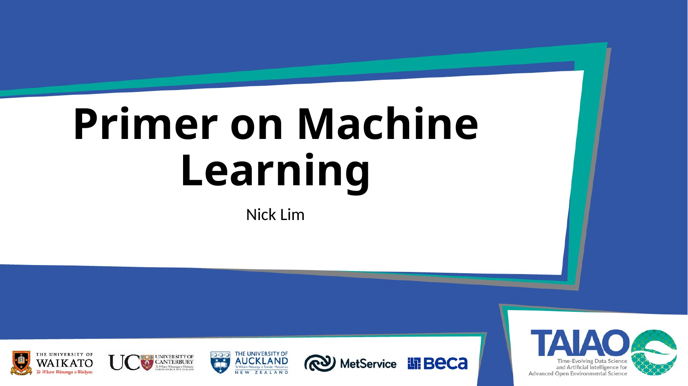Machine learning (ML) is a subfield of artificial intelligence that focuses on building computer programs that can learn from data. Rather than hand‑crafting every rule in a program, ML techniques look for patterns and relationships within a dataset and use those patterns to make predictions or decisions on new, unseen data. This website accompanies Nick Lim’s primer on machine learning and expands on the key ideas covered in each slide.
Outline
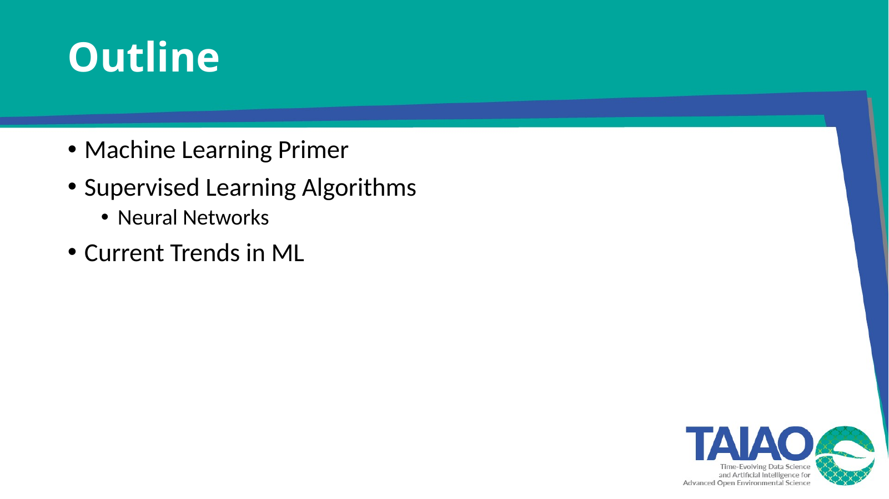The lecture is structured into three parts:
- Machine Learning Primer – a quick introduction to what ML is and why it differs from traditional programming.
- Supervised Learning Algorithms – an overview of popular algorithms for classification and regression, including neural networks.
- Current Trends in ML – a look at emerging topics such as explainability, adversarial robustness and generative models.
What is Machine Learning?
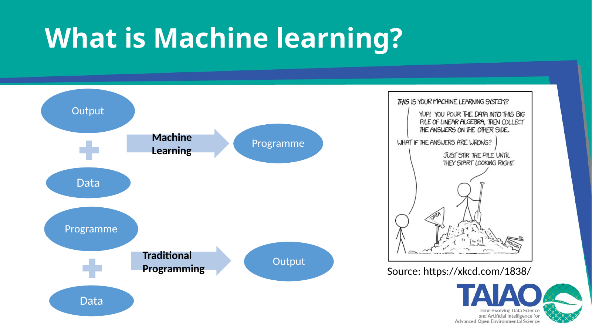Traditional software development involves writing a set of explicit instructions (a program) that takes data as input and produces a desired output. In contrast, machine learning works backwards: we supply the algorithm with data and the corresponding outputs (labels). The algorithm then learns a program – often called a model – that replicates the mapping from inputs to outputs. This is why ML is sometimes referred to as “programming with data”.
The cartoon on the right humorously illustrates how ML can feel like stirring a pile of linear algebra until the answers start looking right. While linear algebra is indeed central to many ML algorithms, we will demystify these techniques in the coming sections.
More on machine learning vs traditional programming
In traditional programming we explicitly encode rules that map an input (e.g. an image) to an output (e.g. the label “cat”). This is feasible for simple tasks but quickly becomes impractical as the problem complexity grows. Machine learning flips the process: by exposing an algorithm to many examples of inputs and outputs, it automatically infers the underlying rules. This allows the same approach to be applied across diverse domains—from computer vision and natural language processing to medical diagnosis and financial prediction.
Machine Learning Tasks
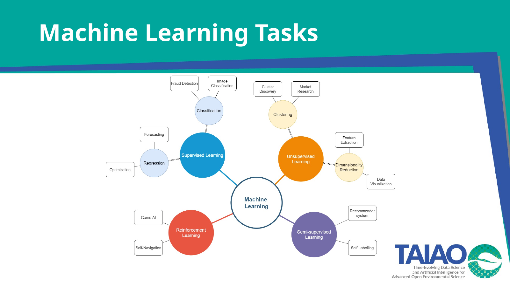Machine learning encompasses a variety of learning paradigms:
- Supervised learning – models are trained with labelled examples, so they learn to predict an output label for new inputs. Common tasks include classification (predicting discrete categories) and regression (predicting continuous values).
- Unsupervised learning – algorithms seek structure in unlabelled data. Examples include clustering, where the goal is to group similar data points together, and dimensionality reduction, which projects high‑dimensional data into a lower‑dimensional space for visualisation.
- Semi‑supervised learning – combines a small amount of labelled data with a large amount of unlabelled data. This approach can improve performance when labelling data is expensive.
- Reinforcement learning – an agent learns to make sequences of decisions by interacting with an environment. The agent receives rewards or penalties and aims to maximise the cumulative reward. Applications range from game playing to robotics.
Supervised Learning
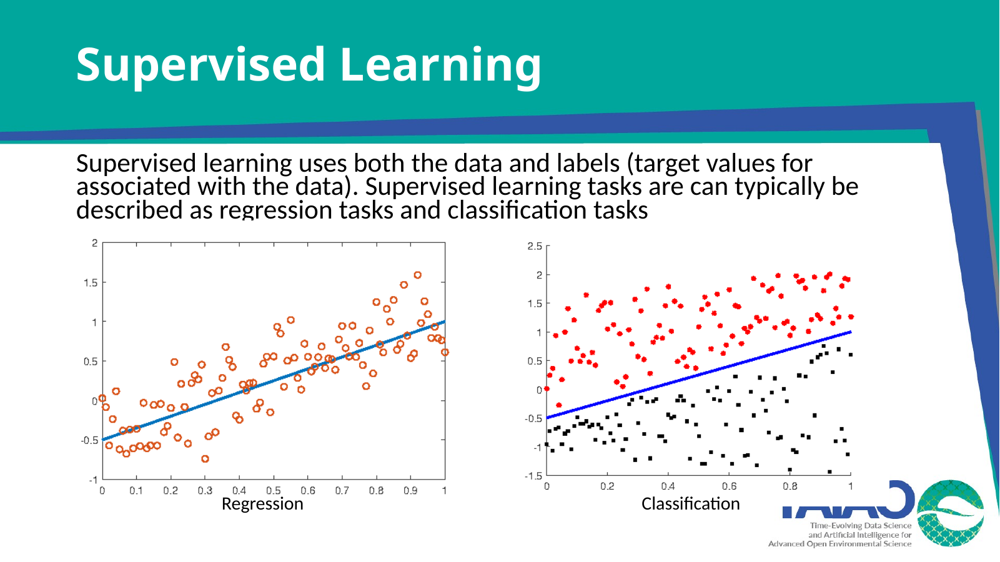In supervised learning, every training example comes with a “ground truth” label. The model uses these labelled examples to learn a mapping from inputs to outputs. There are two broad categories:
- Regression – predicting a continuous numerical value. For instance, estimating house prices given features like size and location. The left scatter plot shows a simple linear regression: the blue line summarises the trend through the orange data points.
- Classification – predicting a discrete category. The right plot shows a binary classification problem in which a line divides red points from black points. The goal is to find a boundary that best separates the classes.
The experiment below allows you to play with linear regression on a toy dataset. Move the sliders to adjust the slope and intercept of the line and observe how the mean squared error changes.
Mean squared error: 0.00
Why mean squared error?
Mean squared error (MSE) measures the average of the squared differences between the predicted and true values. Squaring the differences penalises large errors more strongly, and averaging ensures that the loss is on the same scale regardless of the number of data points. Minimising MSE is a common objective when training regression models.
Supervised Learning Algorithms
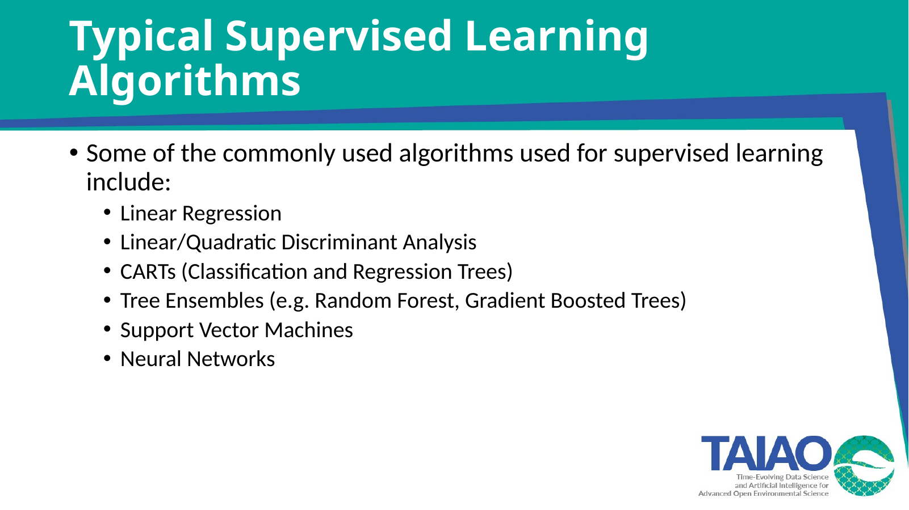A wide variety of algorithms can be used for supervised learning. Here are a few common ones and the types of problems they address:
- Linear regression – fits a straight line (or hyperplane) through data to predict continuous values.
- Linear/Quadratic Discriminant Analysis – models class separation by assuming Gaussian class distributions and finding linear or curved decision boundaries.
- Classification and Regression Trees (CART) – splits the data into regions using a tree structure.
- Tree ensembles – combine multiple trees (e.g. random forests, gradient boosted trees) to improve accuracy and reduce overfitting.
- Support Vector Machines (SVMs) – find a boundary that maximises the margin between classes, often using kernel functions for non‑linear problems.
- Neural networks – highly flexible models that can approximate complex functions when provided with enough data and computational power.
Overfitting vs Underfitting
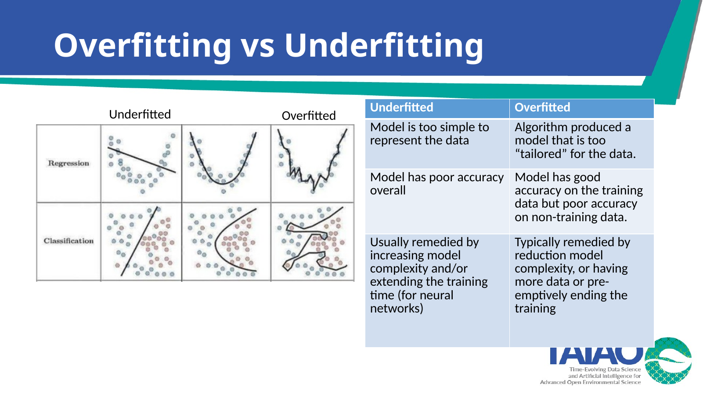When training models it is important to strike a balance between bias and variance. An underfitted model is too simple to capture the underlying structure in the data – for instance, fitting a straight line through a non‑linear pattern. Such models have high bias and perform poorly on both the training and test data.
An overfitted model is excessively complex and captures noise rather than signal – imagine a wiggly curve that passes through every training point. While overfitted models may achieve near‑perfect accuracy on the training set, they often generalise poorly to new data. Remedies include simplifying the model, collecting more training data, or using techniques such as regularisation.
Key differences summarised
| Underfitted | Overfitted | |
|---|---|---|
| Model complexity | Too simple | Too complex |
| Training accuracy | Poor | High |
| Test accuracy | Poor | Poor |
| Typical remedy | Increase complexity / train longer | Reduce complexity / get more data |
Linear Regression
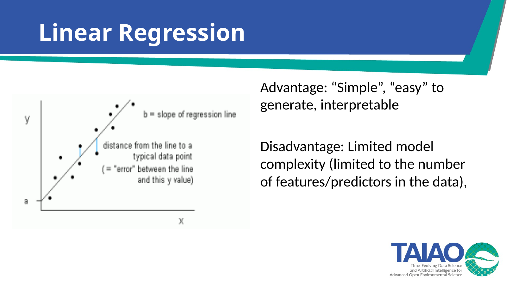Linear regression is one of the simplest predictive models. It assumes a linear relationship between the input variables and the target output. By fitting a line to the data, we can make predictions for new inputs.
Advantages: linear regression is easy to implement, computationally efficient and provides interpretable coefficients. Because of its simplicity, it is often a good baseline model.
Disadvantages: the model can only capture linear relationships. When the true relationship between inputs and outputs is non‑linear, linear regression may underfit. Moreover, the model is limited by the number of features and cannot automatically discover complex interactions.
Linear/Quadratic Discriminant Analysis
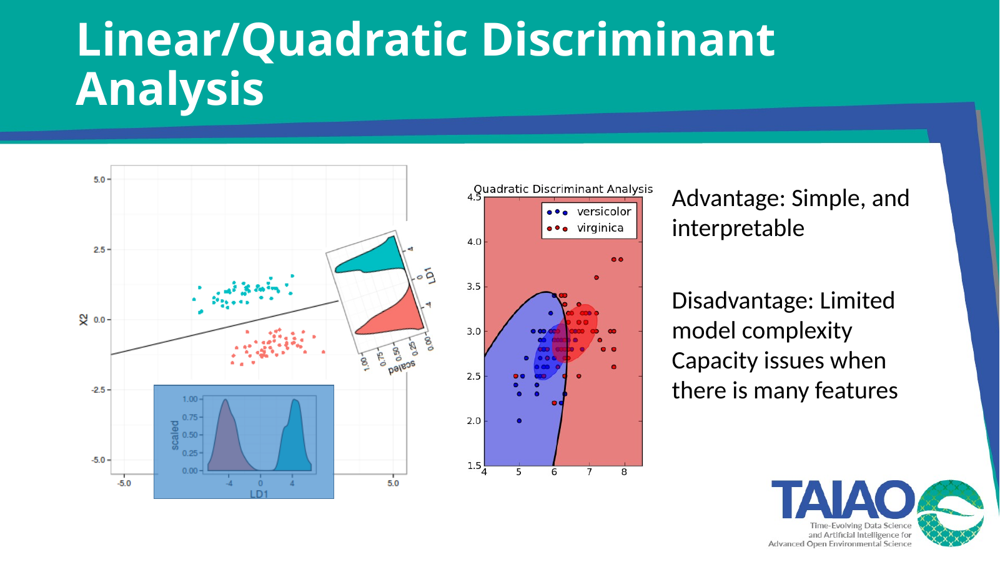Discriminant analysis assumes that each class follows a Gaussian distribution. By estimating the mean and covariance of each class, the algorithm derives a boundary that separates the classes. If the covariance is assumed to be equal across classes the boundary is linear (LDA); if not, it becomes quadratic (QDA).
Advantages: these methods are simple, computationally efficient and produce interpretable boundaries. They can perform surprisingly well when the Gaussian assumption holds.
Disadvantages: model complexity is limited, and performance can degrade when class distributions are non‑Gaussian or when there are many correlated features (due to unstable covariance estimates).
Classification and Regression Trees
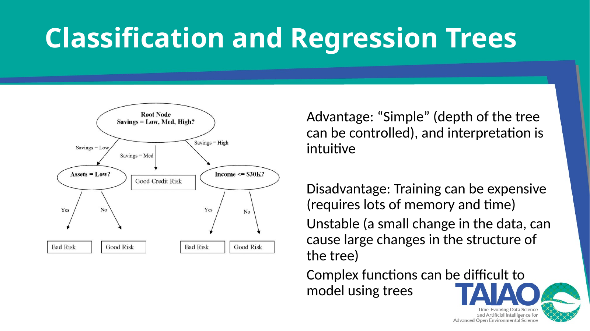Tree‑based models partition the input space by asking a sequence of yes/no questions. Each internal node splits the data based on a single feature, and the leaves contain a prediction. For classification, the prediction is the most common class in the leaf; for regression, it is the average of the target values.
Advantages: trees are intuitive and their depth can be controlled to manage complexity. The rules they learn can be inspected by humans, making them attractive for interpretable models.
Disadvantages: training a tree can be computationally intensive; slight changes in the data can lead to very different trees (high variance). Trees also struggle to model smooth, complex functions unless they become very deep, which increases the risk of overfitting.
Ensembles of Trees
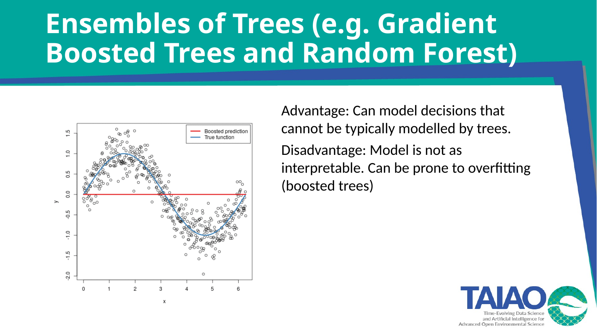Individual trees can be unstable, but combining many trees usually yields much better results. Two popular ensemble techniques are random forests and gradient‑boosted trees.
- Random forests build many trees on bootstrap samples of the data and average their predictions. Randomness in the feature selection decorrelates the trees, which reduces variance.
- Gradient boosting builds trees sequentially, with each tree correcting the errors of the previous ones. This approach can approximate complex functions but is more prone to overfitting if not carefully regularised.
Advantages: ensembles can model complicated relationships beyond the capability of a single tree and usually achieve strong performance out of the box.
Disadvantages: the resulting model is less interpretable than a single tree and may overfit without proper tuning of hyper‑parameters (number of trees, depth, learning rate, etc.).
Support Vector Machines
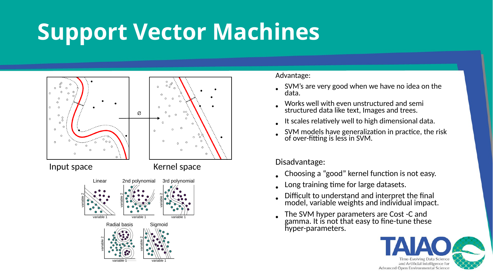Support vector machines (SVMs) seek a decision boundary that maximises the margin between classes. Only a subset of training points – the support vectors – define this boundary. By applying a kernel function, SVMs can learn non‑linear boundaries by implicitly mapping the data into a higher‑dimensional space.
Advantages: SVMs often work well when you have limited domain knowledge about the data. They handle high‑dimensional spaces and can model complex boundaries through kernels. They also tend to generalise well because the margin maximisation principle controls overfitting.
Disadvantages: choosing an appropriate kernel and tuning hyper‑parameters can be challenging. Training times can be long for large datasets, and the resulting model is difficult to interpret. Furthermore, the final solution only depends on a subset of the training data (the support vectors), which may make evaluation relatively expensive.
Neural Networks
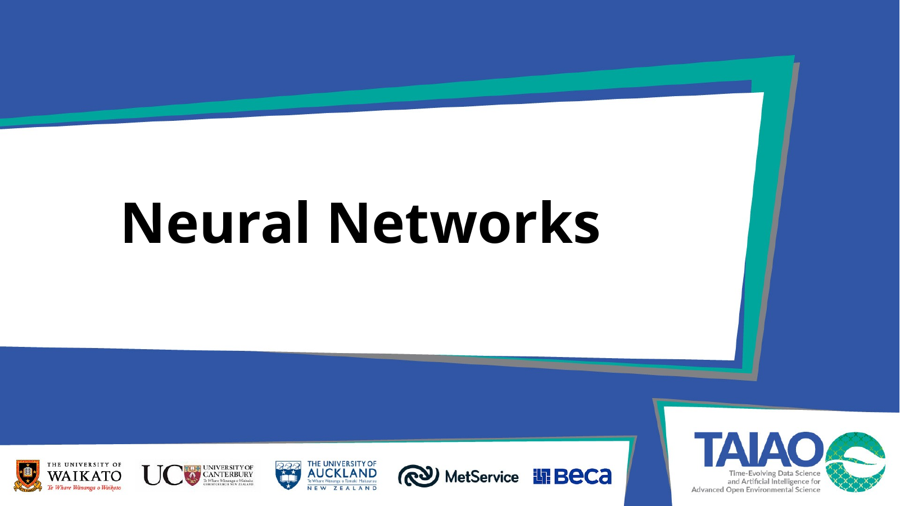Neural networks are inspired by biological brains and consist of interconnected “neurons” arranged in layers. Each neuron performs a simple computation: it takes inputs, multiplies them by weights, adds a bias and passes the result through a non‑linear activation function. By stacking many such units, networks can approximate very complicated functions.
In the following slides we will examine the basic building blocks of neural networks (the perceptron), how they learn, common challenges and several architectural variants.
Perceptron
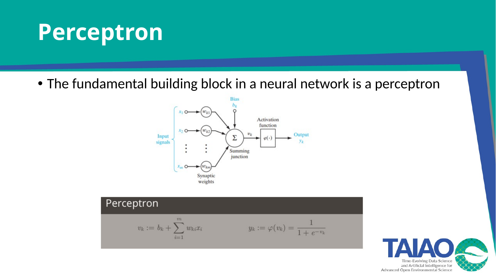The perceptron is the fundamental unit of a neural network. It receives multiple inputs (x₁, x₂, …, xₘ), each weighted by a parameter wᵢ. The weighted inputs are summed together with a bias term and then passed through an activation function. A common activation is the sigmoid function, which squeezes the input into the range (0, 1). Mathematically this can be written as:
v = b + \(\sum_{i=1}^{m} w_i x_i\), y = \(\phi(v)\) = \(\frac{1}{1 + e^{-v}}\)
By connecting perceptrons in layers, the outputs of one layer become the inputs to the next. This simple idea underlies deep learning.
Learning in Neural Networks
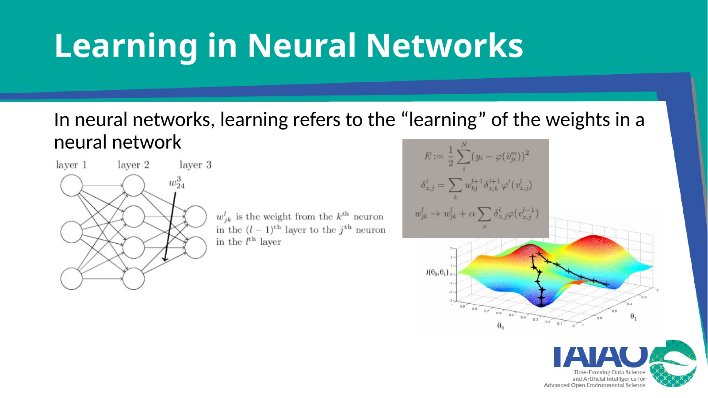Training a neural network means adjusting its weights and biases so that the model makes accurate predictions. This is typically done by defining a loss function – for example, the mean squared error for regression – and minimising it via gradient descent. The gradient tells us how to adjust each weight to reduce the loss. Backpropagation efficiently computes these gradients by applying the chain rule through the layers of the network.
The colourful surface on the right illustrates a loss landscape. Starting from some initial point, gradient descent follows the steepest downward direction to reach a minimum. However, the path taken depends on the choice of learning rate and the shape of the surface.
Challenges in Learning
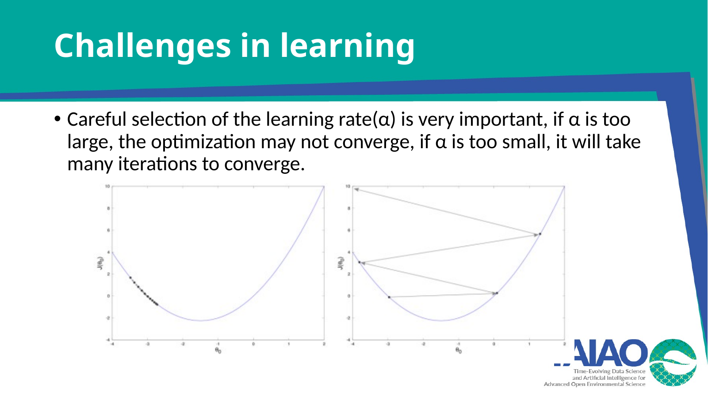A key hyper‑parameter in gradient descent is the learning rate α. If α is set too large, the algorithm may overshoot the minimum and diverge. If α is too small, convergence will be slow and may get stuck in undesirable local minima. Choosing a suitable learning rate often requires experimentation.
Use the slider below to explore how the learning rate affects the gradient descent path on the simple function \(J(w) = w^2\). Observe how large step sizes overshoot the minimum whereas small step sizes move slowly toward the optimum.
Why is choosing α hard?
Real‑world loss landscapes are rarely simple bowls like the one pictured. They often contain many local minima and saddle points. Adaptive optimisation algorithms such as Adam and RMSprop adjust the effective learning rate during training, helping to navigate these complex surfaces.
Neural Network Variants
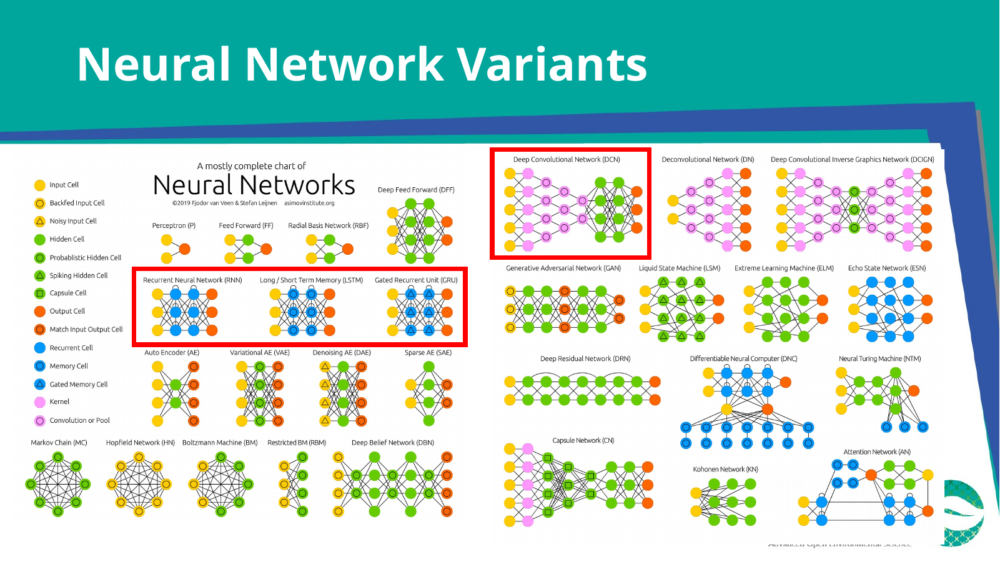Beyond simple feed‑forward networks, researchers have developed many specialised architectures to tackle different types of data:
- Convolutional Neural Networks (CNNs) – excel at processing images by exploiting the local correlation in pixels. They use filters that slide over the input to detect features such as edges and textures.
- Recurrent Neural Networks (RNNs) – incorporate cycles that allow information to persist, making them suitable for sequence data like speech and text. Variants such as LSTMs and GRUs address the vanishing‑gradient problem.
- Autoencoders – learn to compress data into a lower‑dimensional representation and then reconstruct the input. They are useful for unsupervised learning and dimensionality reduction.
- Generative models such as GANs and variational autoencoders – learn to generate new samples resembling the training data.
- Attention and transformer models – allow the network to focus on different parts of the input when making predictions. Transformers underpin state‑of‑the‑art models in natural language processing and, increasingly, vision.
Convolutional Neural Networks
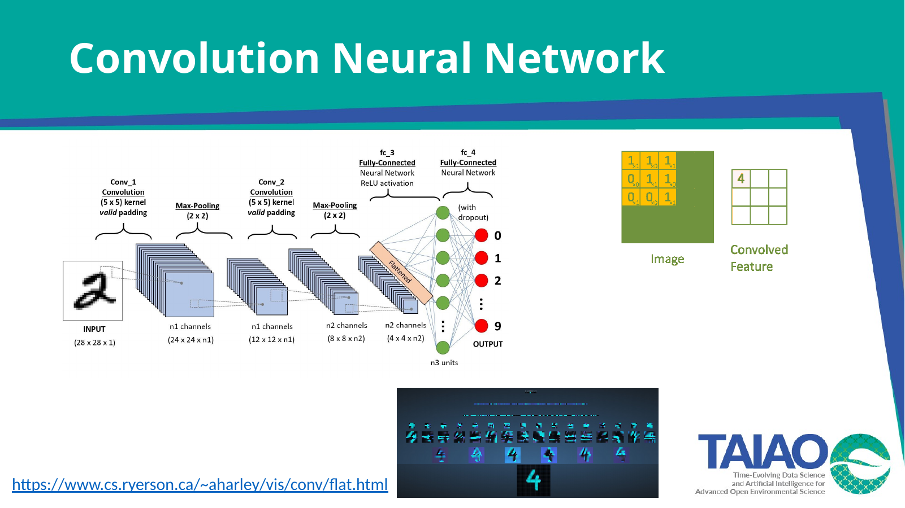CNNs are particularly effective for image recognition tasks. A convolution layer applies a small kernel (filter) across the input image, producing a feature map that highlights certain patterns such as edges. Pooling layers down‑sample the spatial dimensions, making the network invariant to small translations. After several convolution and pooling stages, the representation is flattened and passed through fully‑connected layers for classification.
The small diagram to the right shows how a 3×3 kernel might slide over a grid of pixel values and produce a single number in the convolved feature map. Deeper networks learn hierarchical features: early layers detect simple shapes, while later layers combine these into more complex concepts (e.g. facial features or digits).
Interactive CNN visualisations
There are many excellent online tools to help you build intuition for CNNs. For example, the Ryerson convolution visualiser lets you step through the convolution process and see how different filters respond to an image. Experimenting with these tools can deepen your understanding of how CNNs work.
RNNs and LSTMs
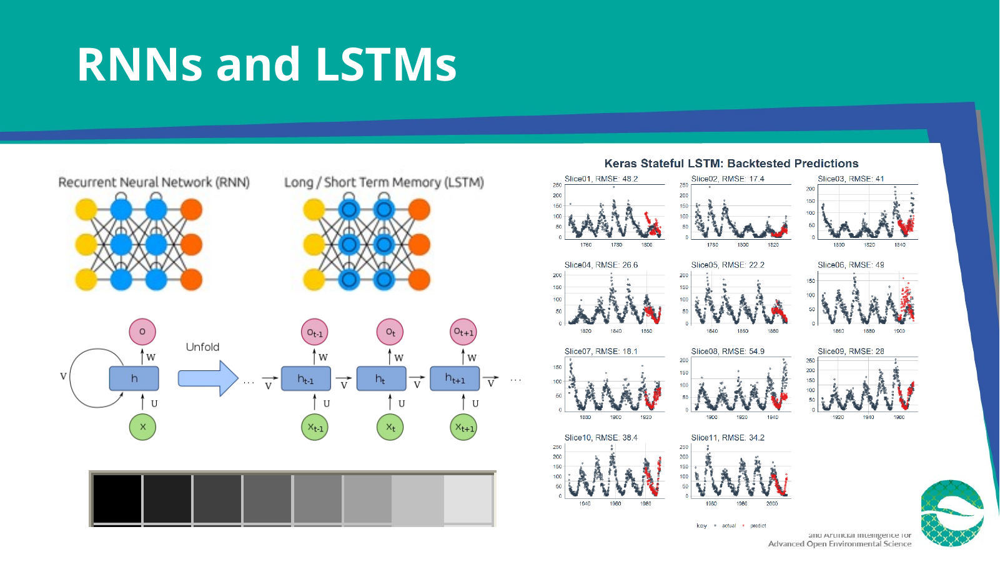Standard feed‑forward networks process inputs independently, but many problems involve sequences where previous inputs influence future outputs. Recurrent Neural Networks introduce feedback connections, allowing information to persist over time. This makes them well‑suited for language modelling, time‑series forecasting and other sequential tasks.
The Long Short‑Term Memory (LSTM) architecture addresses the problem of vanishing gradients by using gating mechanisms that learn to retain or forget information. The charts on the right show an LSTM predicting future values of a time series: blue points are the actual values and red points are the predictions.
Trends in ML
Machine learning is a rapidly evolving field. The final section of the lecture highlights some of the exciting directions that researchers and practitioners are pursuing today.
Current Trends – Explainability & Calibration
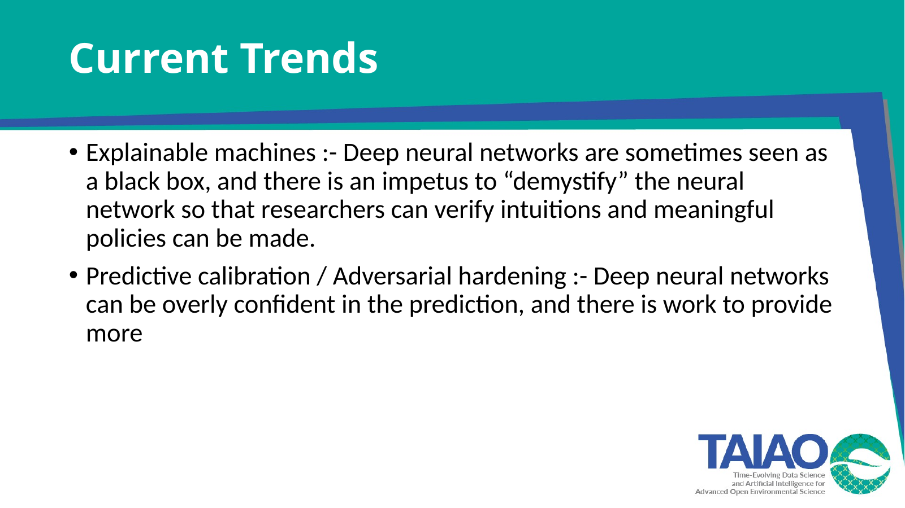As ML models become more complex, understanding their reasoning becomes harder. There is a growing movement towards explainable AI: developing tools and techniques that make neural networks more transparent so that scientists, engineers and policymakers can trust their outputs and diagnose errors.
Another important area is predictive calibration and adversarial robustness. Neural networks can be overly confident even when wrong, and they can be manipulated by carefully crafted perturbations. Research in this area seeks to calibrate probability estimates and harden models against adversarial attacks.
Current Trends – GANs & Attention
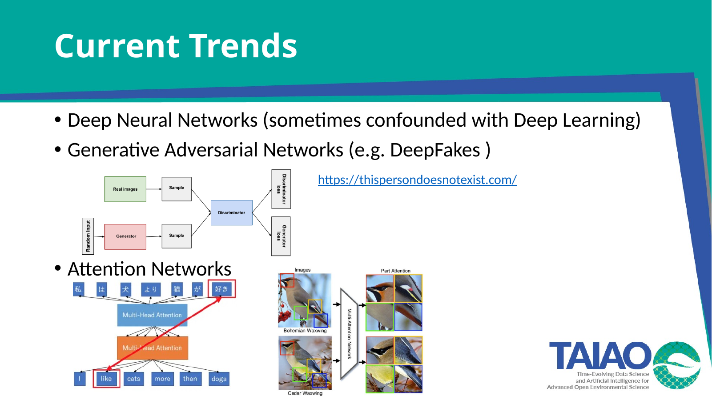Two particularly influential ideas in recent years are Generative Adversarial Networks (GANs) and attention mechanisms.
- GANs pit a generator network against a discriminator network in a two‑player game. The generator learns to produce realistic samples, while the discriminator learns to distinguish between real and fake data. This adversarial process has led to realistic image synthesis and so‑called “deepfakes”. The site thispersondoesnotexist.com shows synthetic faces generated by a GAN.
- Attention networks allow a model to weigh the importance of different parts of the input when making predictions. The transformer architecture, which relies solely on attention, has revolutionised natural language processing and is now being applied to vision tasks as well.
Additional Resources
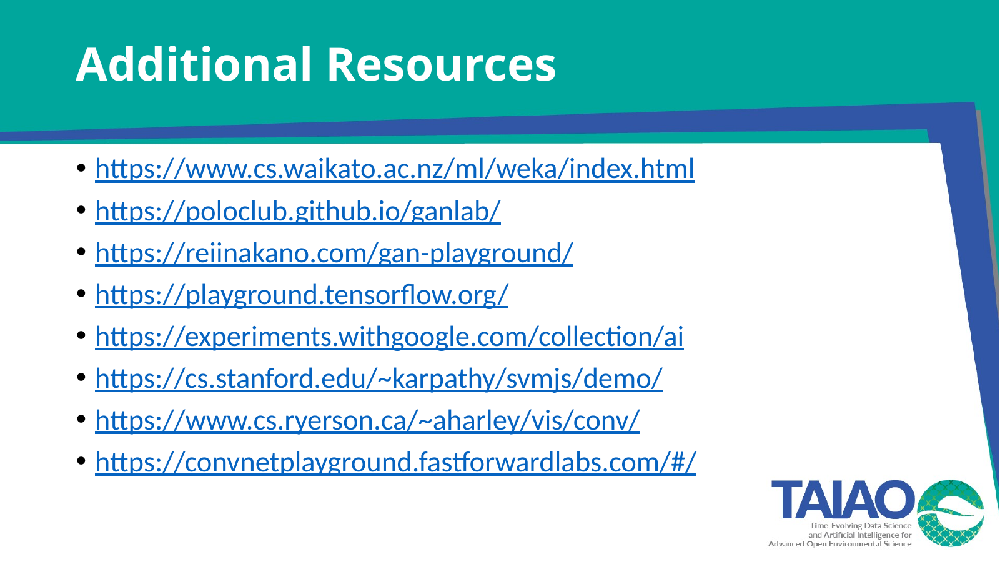To explore machine learning further, here are some interactive resources and tools that complement this primer:
- Weka – a collection of machine learning algorithms with a graphical interface.
- GAN Lab and GAN Playground – interactive demos for generative adversarial networks.
- TensorFlow Playground – build and train neural networks in your browser.
- Google AI Experiments – a collection of playful experiments demonstrating ML concepts.
- SVMJS demo – explore linear and non‑linear SVMs interactively.
- Convolution visualiser – understand how convolution works.
- ConvNet Playground – experiment with simple convolutional networks.
Addendum
The remaining slides provide a short excursion into computer vision, clustering and advanced topics such as the XOR problem and transfer learning.
What is Object Detection?
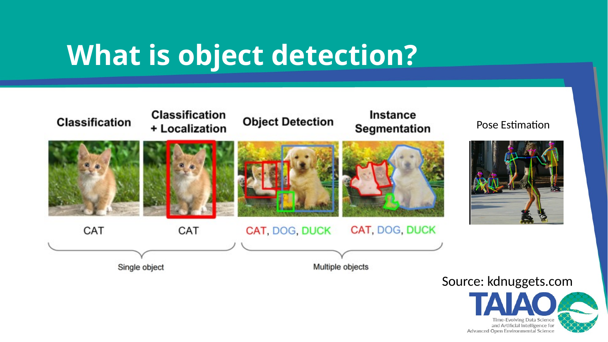Object detection goes beyond merely recognising what is in an image; it also identifies where those objects are located. At one end of the spectrum, image classification simply assigns a label (e.g. “cat”) to the entire image. Classification + localisation adds a bounding box around the object of interest. Moving further, object detection finds and labels multiple objects. Instance segmentation provides even finer detail by delineating the precise pixels belonging to each object. Pose estimation goes beyond detection to infer the positions of body joints, as illustrated on the right.
Applications of Object Detection
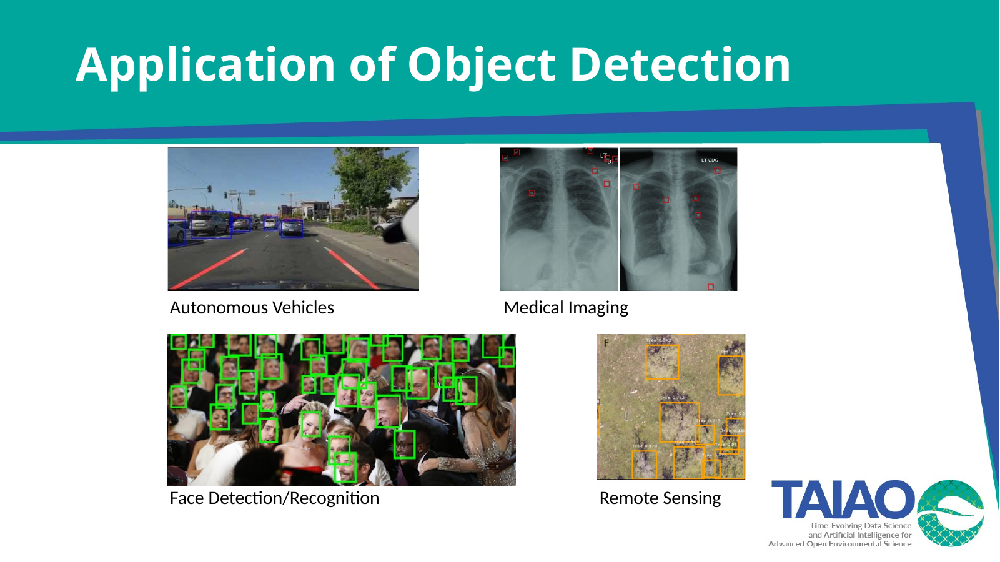Object detection underpins many real‑world applications. In autonomous vehicles it allows the car to detect pedestrians, other vehicles and road signs in real time. In medical imaging it helps radiologists locate anomalies such as tumours. Face detection is widely used in consumer cameras and security systems. In remote sensing, detecting objects in satellite images helps monitor wildlife populations and map infrastructure.
K‑Means Clustering
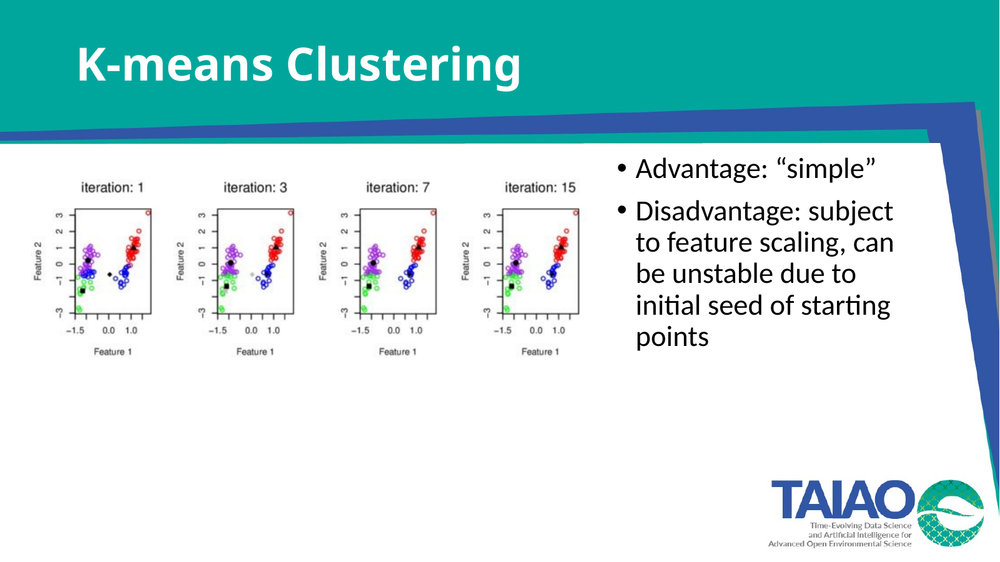K‑means clustering is a popular unsupervised learning algorithm that partitions data into k clusters. The algorithm works by iteratively assigning points to the nearest cluster centre and then recomputing the centres as the mean of assigned points. The plot shows how the clusters evolve over successive iterations.
Advantages: k‑means is conceptually simple and often provides useful clusterings of data. It scales well to large datasets.
Disadvantages: results depend on the initial placement of cluster centres and can be sensitive to feature scaling. K‑means assumes spherical clusters of similar size and struggles with more complex shapes.
The XOR Problem
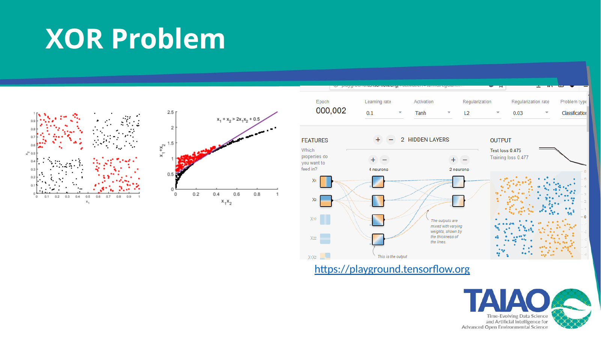The XOR (exclusive OR) problem is a classic example of a pattern that cannot be solved by a simple linear model. Points belonging to the same class lie in diagonally opposite corners of the square. A single straight line cannot separate the red points from the black points. This problem motivated the development of multi‑layer neural networks, which can represent non‑linear decision boundaries.
One trick to solve XOR is to add an extra feature (e.g. x₁·x₂) so that the classes become linearly separable in the transformed space. Alternatively, neural networks can learn such transformations automatically when provided with hidden layers. You can experiment with building networks to solve XOR using the TensorFlow Playground.
Transfer Learning
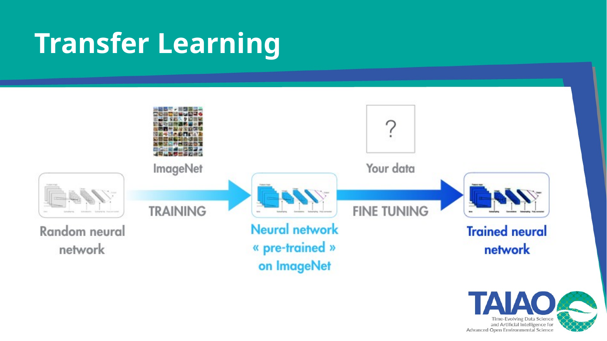Training a deep neural network from scratch requires large amounts of labelled data and computational resources. Transfer learning addresses this by reusing a model that has been pretrained on a large dataset, such as ImageNet. Because early layers learn generic features like edges and textures, they can serve as a solid foundation for new tasks. The final layers are then fine‑tuned on your specific dataset, resulting in a trained network with far less effort.